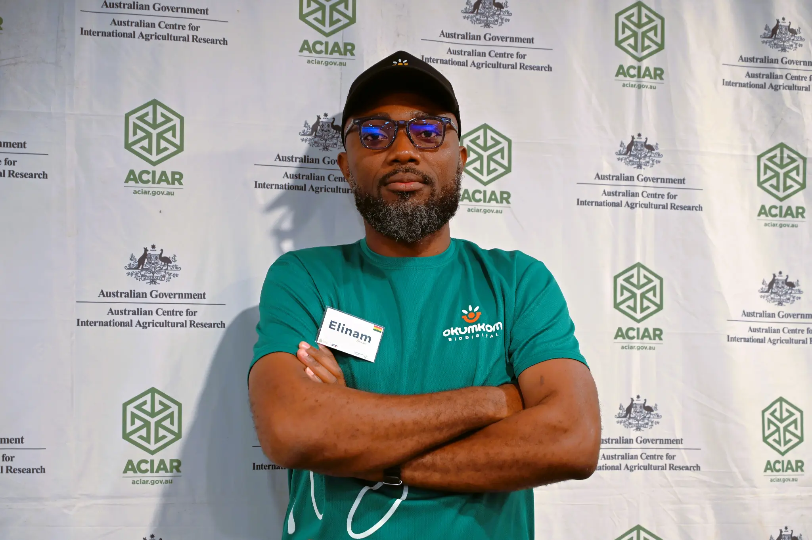

Tema, Ghana · Available for Projects
Freelance IT Technician & Product Strategy Lead
Nearly two decades driving technology infrastructure, digital product development, and operational strategy — from agritech startups to humanitarian organisations.

I am a versatile IT professional with close to two decades of experience spanning network systems administration, IT support, infrastructure deployment, business development, product strategy, and technology leadership.
My work sits at the intersection of technical depth and strategic vision — from designing LAN/WLAN infrastructure for corporate offices to leading product roadmaps for a Ghanaian agritech startup addressing food accessibility. I have served humanitarian organisations, logistics companies, hotels, and early-stage ventures.
I speak English, Twi, and Ewe, and I bring curiosity, reliability, and a bias for impact to every engagement.
Okumkom BioDigital Investment Ltd
Independent Consultant
Really Great Tech
Food For All Africa
Food For All Africa
Food For All Africa
Africa Cargo Central Ltd
Hotel Marjorie 'Y'
Multi Audivis
ALX Africa · 2025
HKUST · 2025
Vanderbilt University (Coursera) · 2024
WACSI · 2017
IPMC Ghana · 2010
IPMC Ghana · 2009
Whether you need reliable IT support, a technology partner, or a product strategy lead — I am open to conversations.